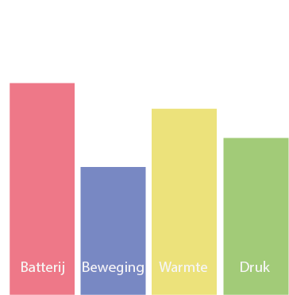

Artificial creatures zijn vaak machines/robots die intelligentie vertonen. Dit wordt ook wel kunstmatige intelligentie genoemd. Hiermee wordt de intelligentie bedoeld waarmee robots problemen oplossen. Ze imiteren hierbij de denkvermogen van een mens.
Bij dit onderwerp wordt er gebruik gemaakt van de homeostatis model. Dit is een model die gebruikt wordt om behoeftes te identificeren. Deze behoeften worden beïnvloed door eigen acties of externe stimuli om alles gebalanceerd te houden. De opdracht is om de homeostatis model aan een apparaat toe te passen. Hierbij heb ik gekozen voor een automatische schuifdoor. Verder zal er ook een kleine onderzoek gedaan worden naar voorbeelden van andere artificial creatures om zo een beter beeld te krijgen van wat het precies inhoudt.
Homeostatis-model
Automatic sliding door
Een automatische schuifdeur is een deur die werkt op batterijen. De deur bevat een aantal sensoren die ervoor zorgen dat de deur opengaan wanneer iemand er naartoe loopt en sluit wanneer iemand er vanaf loopt. Wanneer iemand in de buurt komt weet de deur dat het open moet doordat de bewegingssensor de beweging oppikt. Een probleem die hierbij kan ontstaan is dat wanneer iemand stilstaat of te langzaam loopt, de deuren dan verward zullen raken en ze niet meer weten of ze nou wel of niet open moeten. Om deze ongelukken te voorkomen maken de deuren gebruik van de infrarood sensor die de temperatuurverschil meet van de omgeving eromheen. Wanneer iemand dan de deur benaderd zal de deur de beweging meten en de warmteverschil opvangen waardoor het zeker weet dat er iemand aankomt en het dus open moet. Voor het sluiten gebruikt het een druksensor. Wanneer de deur merkt dat het gewicht meer is dan het limiet blijft het open, op deze manier weet de deur dat het niet dicht moet gaan voordat iemand er doorheen is gelopen.
In de homeostasis model staat de batterijen het hoogst omdat het zonder batterijen niet zou kunnen werken. Het tweede hoogste is de infrarood sensor (warmte) omdat dit het meest effectieve methode is om erachter te komen of er daadwerkelijk iemand door de deur heen wil of niet. De bewegingssensor is daar niet heel erg betrouwbaar in. Dit is dan ook de reden waarom dit het laagst staat in het model. Verder heb ik de druksensor als derde hoogste geplaatst, omdat de deuren zonder deze sensor ook zouden werken, maar het veiliger is om het te hebben. De schuifdeur kan beschouwd worden als een creature doordat het instaat is om zelf te beslissen wanneer het open en dicht moet. Ook raakt het verward wanneer het geen duidelijke informatie krijgt.
Research
MantaDroid
De MantaDroid is een waterrobot die de zweefmotor van waterroggen emuleert. Het is gemaakt door een team van onderzoekers van de National University of Singapore (NUS). Er zijn verschillende soorten experimenten uitgevoerd om erachter te komen welk vin ontwerp het best zou werken. Er is gekozen voor een paar borstvinnen die gemaakt zijn van PVC-vellen. Net als een echte mantarog heeft de robot een plat en breed lichaam dat geschikt is voor een reeks sensoren die voor verschillende doeleinden gebruikt kunnen worden, zoals het bestuderen van biodiversiteit, meten van hydrografische gegevens en uitvoeren van zoekbeweging. Het zou in de toekomst gebruikt kunnen worden voor onderwaterbewaking.
Ik heb gekozen voor deze MantaDroid omdat zijn soepel beweging me erg aantrok. Hij lijkt namelijk helemaal niet op een robot, zowel zijn beweging als zijn uiterlijk niet. Ik zie dit daarom ook als een artificial creature. Het lijkt volledig niet op een geprogrammeerde computer, maar op een normale waterorganisme die een eigen wil en gevoelens heeft.
http://news.nus.edu.sg/press-releases/NUS-robotic-manta-ray
Reflectie
Ook over dit onderwerp had ik niet heel veel kennis. Mijn beeld van een artificial creature was vooral een robot die je ook wel eens ziet in films en in series. Het leek me wel een heel leuk onderwerp, maar ook heel erg moeilijk. Ik wist dat je later voor de HCI weken een opdracht moet gaan maken en was bang dat ik het veel te lastig zou zijn om zo een robot te maken, dus was ik hier eerst niet zo geïnteresseerd in. Ik ben er later wel achter gekomen dat ik veel te moeilijk dacht. Ook hoeft een artificial creature niet gelijk een robot te betekenen en al helemaal niet zo een als in de films. Het kan dus net als in de opdracht hierboven zelfs een schuifdeur kunnen zijn.